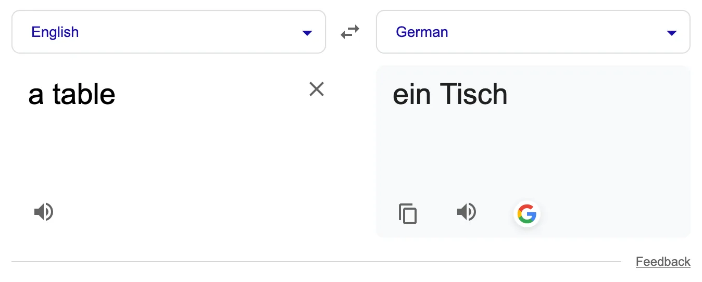
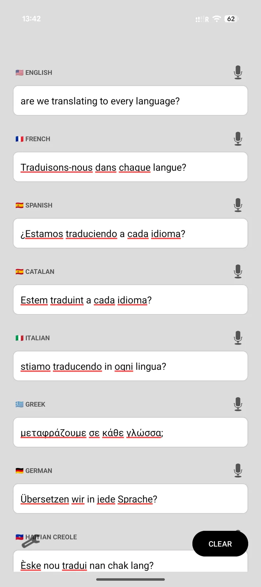
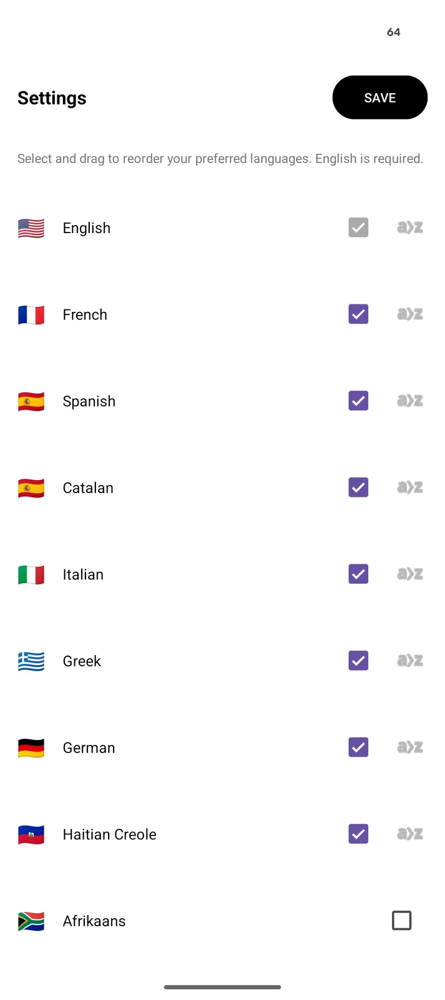

+------------------------------------------------------------+
| PROJECT TAG |
+------------------------------------------------------------+
| Project : MultiTrans |
| Started : February 14, 2026 |
| Status : Good enough |
| Repo : https://github.com/vderm/MultiTrans |
+------------------------------------------------------------+
I’m not good with languages. For example, I don’t get why there are genders for objects in French, Spanish, Greek, German, etc. Animals, sure, they have genders. A table? A table is female in French. A table is masculine in German. A table is neuter in Greek. And this is why I love English and Armenian, there are no genders! Why? Seriously. Why?!?
So, there’s a lot of memorization and familiarization to get there. The simplest approach is to use translators.
Google Translate
When using Google Translate, you have to pick a source and a target language.

This is usually fine, unless you’re trying to learn German and Spanish
By that I mean Castilian Spanish since Catalan is also Spanish.
in parallel, and living in Barcelona, so Catalan is prevalent. So, you’d be selecting Catalan as a source, English as a target, checking, then maybe swapping the languages then selecting German as the target to remember what that word was, and then switch back again to check in Spanish. The Detect Language is nice, but for small translations it’s not always right.
So, what would be better?
I want to be able to have a list of all the languages I’m interested in, fill out the text input for any one, and see the translation in the other languages. I would input in English and check French, Spanish, Catalan, Greek and German in parallel. If I see a sign in German, I would type it in German and check the rest. I need this to be very convenient to use and should be available offline, so building an Android App made the most sense (plus I get to learn how to do it!).
Android App
Today, things have gotten almost too easy to do these things:
- Step 1: download Android Studio;
- Step 2: enable Gemini;
- Step 3: explain to the agent what you need;
- Step 4: iterate until happy while checking the emulator or running in developer mode;
- Step 5: use the developer mode to get the app onto the phone or compile an
*.apkpackage and install (and share with your friends and family!).
I kept it simple: you see the language name and a text box just below it. You can type in English “are we translating to every language?” and the other boxes get filled. I found that sentences work better than single words. Lastly, I also included a text-to-speech (TTS) button so we can get an audio output because why not.

Finally, instead of hard-coding a list of languages that I’m only interested in, I also added a settings menu where you could add, remove and sort languages. English is assumed to be the base language and is always in-use. On the first use of a language, the dictionary is downloaded and cached for future use. When a language is deselected, that dictionary is deleted.

I’ve made the source code available in this Github repository. Since I don’t have an Android developer license, I can’t sign packages, so I don’t really feel comfortable publishing the *.apk file.
Available Languages
Android ML Kit supports these languages:
- A-F: Afrikaans, Albanian, Arabic, Belarusian, Bengali, Bulgarian, Catalan, Chinese, Croatian, Czech, Danish, Dutch, English, Esperanto, Estonian, Finnish, French.
- G-M: Galician, Georgian, German, Greek, Gujarati, Haitian Creole, Hebrew, Hindi, Hungarian, Icelandic, Indonesian, Irish, Italian, Japanese, Kannada, Korean, Latvian, Lithuanian, Macedonian, Malay, Maltese, Marathi.
- N-S: Norwegian, Persian, Polish, Portuguese, Romanian, Russian, Slovak, Slovenian, Spanish, Swahili, Swedish.
- T-Z: Tagalog, Tamil, Telugu, Thai, Turkish, Ukrainian, Urdu, Vietnamese, Welsh.